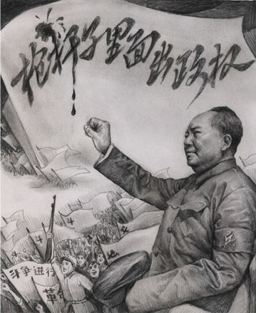

Cửu Bình 3: ĐCSTQ, một chính thể bạo ngược (audio)
Tài liệu gốc: http://dajiyuan.com/gb/4/11/23/n725597.htm
0 – Dẫn nhập
1 – Đảng cộng sản là gì?
2 – Đảng cộng sản Trung Quốc xuất sinh như thế nào?
3 – Chính quyền bạo lực của Đảng cộng sản Trung Quốc.
4 – Đảng cộng sản, một lực lượng phản vũ trụ.
5 – Giang Trạch Dân và Đảng cộng sản Trung Quốc lợi dụng lẫn nhau để đàn áp Pháp Luân Công.
6 – Đảng cộng sản Trung Quốc phá hoại văn hoá dân tộc.
7 – Lịch sử giết chóc của Đảng cộng sản Trung Quốc.
8 – Bản chất tà giáo của Đảng cộng sản Trung Quốc.
9 – Bản tính lưu manh của Đảng cộng sản Trung Quốc.
Lời mở đầu
|
 |
Khi nói về “bạo chính”, người Trung Quốc thường nghĩ đến Tần Thủy Hoàng (259-210 trước Công Nguyên), Hoàng đế đầu tiên của Triều đại nhà Tần, người đã ra lệnh đốt sách triết học và chôn sống các Nho sĩ.
Sự tàn bạo của vua Tần đối với dân chúng xuất phát từ chính sách: “Tất cả tài nguyên trong thiên hạ đều là để phụng sự triều đình”. [1] Chính sách này có bốn khía cạnh chính: (a) đánh thuế cực kỳ nặng nề; (b) lãng phí nhân công cho các công trình chỉ để tự ca ngợi Hoàng đế; (c) tra tấn tàn bạo theo các luật lệ hà khắc và trừng phạt cả những thân nhân và hàng xóm của phạm nhân; (d) và kiểm soát tư tưởng của dân chúng bằng cách phong tỏa tất cả các con đường tự do tư tưởng và biểu đạt quan điểm thông qua việc đốt sách và thậm chí chôn sống các Nho sĩ. Dưới thời Tần Thủy Hoàng, Trung Quốc chỉ có khoảng mười triệu dân, vậy mà triều đình nhà Tần đã sử dụng hơn hai triệu người để phục dịch. Tần Thủy Hoàng đã áp dụng luật lệ hà khắc của mình đối với giới trí thức, cấm tự do tư tưởng trên diện rộng. Trong thời kỳ cai trị của vua Tần, hàng ngàn Nho sĩ và quan lại dám phê phán triều đình đã bị giết chết.
Ngày nay, Đảng Cộng sản Trung quốc (ĐCSTQ) lạm dụng quyền lực và bạo lực thậm chí còn nghiêm trọng hơn nhiều so với Triều đại nhà Tần bạo ngược. Triết học của Đảng Cộng sản là “triết học đấu tranh”, và sự thống trị của Đảng Cộng sản đã được xây dựng trên cơ sở một chuỗi các cuộc “đấu tranh giai cấp”, “đấu tranh đường lối”, “đấu tranh tư tưởng”,… cả ở Trung quốc và đối với các nước khác. Mao Trạch Đông, người lãnh đạo ĐCSTQ đầu tiên của Nước Cộng hòa Nhân dân Trung Hoa, không còn kiêng nể gì nữa mà đã nói thẳng thừng rằng, “Tần Thủy Hoàng đáng kể gì? Ông ta chỉ giết có 46 chục Nho sĩ. Còn chúng ta đã giết 46 ngàn thằng trí thức hủ nho ấy chứ. Có kẻ chửi chúng ta là độc tài thống trị, là Tần Thuỷ Hoàng thời nay. Chúng ta thừa nhận hết, rằng rất đúng sự thực. Nhưng chúng bay nói thế chưa đủ, chúng ta phải nói thêm rằng thực ra còn hơn thế.” [2]
Chúng ta hãy nhìn lại 55 năm thống khổ của Trung Quốc dưới ách thống trị của ĐCSTQ. Bởi vì triết lý nền tảng của nó là “đấu tranh giai cấp”, ĐCSTQ đã không từ một thủ đoạn nào kể từ khi giành được chính quyền để tiến hành tiêu diệt các giai cấp và dựng lên chế độ thống trị bằng khủng bố của nó thông qua con đường “bạo lực cách mạng”. Giết người và tẩy não đã được sử dụng đồng thời để đàn áp bất cứ niềm tin nào khác với chủ nghĩa cộng sản. ĐCSTQ đã phát động hết phong trào này đến phong trào khác để tự tôn nó lên làm thần thánh và luôn luôn đúng đắn. Theo đuổi các lý thuyết của nó về đấu tranh giai cấp và bạo lực cách mạng, ĐCSTQ đã cố gắng tiêu diệt những người bất đồng chính kiến và các tầng lớp xã hội đối lập, sử dụng bạo lực và lừa dối để bắt toàn thể nhân dân Trung Quốc trở thành những đầy tớ trung thành và ngoan ngoãn dưới ách nô dịch tàn bạo của nó.
******************
I. Cải cách ruộng đất — tiêu diệt giai cấp địa chủ
Vừa mới được ba tháng sau khi thành lập nước Trung Quốc cộng sản, ĐCSTQ đã kêu gọi tiêu diệt giai cấp địa chủ như là một trong những đường lối chỉ đạo cho chương trình cải cách ruộng đất trên toàn quốc của mình. Khẩu hiệu của Đảng “dân cày có ruộng” đã kích động tính ích kỷ, tư lợi của những người nông dân không có ruộng đất, xúi giục họ đấu tranh với những người nông dân có sở hữu ruộng đất bằng bất cứ phương kế gì và không thèm đếm xỉa gì đến khía cạnh đạo đức trong hành động. Chiến dịch cải cách ruộng đất đã đề ra rõ ràng việc tiêu diệt giai cấp địa chủ, và phân loại dân nông thôn thành nhiều nhóm trong xã hội. Hai mươi triệu dân nông thôn trên toàn quốc đã bị dán nhãn là “địa chủ”, “phú nông”, “phản động“, và “phần tử xấu”. Những con người mới bị xã hội ruồng bỏ này đã phải đối mặt với sự phân biệt đối xử, nhục nhã, và đã mất đi tất cả các quyền công dân của mình. Khi chiến dịch cải cách ruộng đất vươn đến các vùng xa xôi và các làng mạc của những người dân tộc thiểu số, thì cũng là lúc các tổ chức của Đảng Cộng sản cũng được mở rộng rất nhanh. Các chi bộ Đảng ở các khu thành thị nhỏ và các làng xã đã lan ra khắp nơi trên lãnh thổ Trung Quốc. Các chi bộ Đảng tại địa phương cũng là những cái loa tuyên truyền các chỉ thị từ Ban Chấp hành Trung ương Đảng và là tuyến đầu của cuộc đấu tranh giai cấp, kích động nông dân đứng lên chống lại địa chủ. Gần một trăm nghìn địa chủ đã bị giết chết trong chiến dịch này. Ở một số vùng, Đảng Cộng sản và nông dân đã giết chết toàn bộ gia đình địa chủ, bất kể là già hay trẻ, như là một cách để nhổ tận gốc giai cấp địa chủ.
Đồng thời, ĐCSTQ cũng phát động làn sóng tuyên truyền đầu tiên của mình, nói rằng “Mao Chủ tịch là vị cứu tinh vĩ đại của nhân dân” và rằng “chỉ có tài năng của ĐCSTQ mới có thể cứu được Trung Quốc”. Trong cuộc cải cách ruộng đất, những người nông dân không có ruộng đất đã nhận được những gì họ muốn thông qua chính sách của ĐCSTQ là thu hoạch mà không cần lao động: cưỡng đoạt bằng bất cứ cách nào. Nông dân nghèo đã mang ơn ĐCSTQ vì những cải thiện trong cuộc sống của mình và vì vậy họ đã tin vào những tuyên truyền của ĐCSTQ rằng Đảng làm việc vì lợi ích của nhân dân.
Đối với những chủ nhân của những miếng đất mới đoạt được, những ngày tươi đẹp “dân cày có ruộng” rất ngắn ngủi. Trong vòng hai năm, ĐCSTQ đã áp đặt một số cuộc vận động bắt buộc nông dân phải ra nhập các tổ chức như các nhóm tương trợ, hợp tác xã sơ cấp, hợp tác xã cao cấp, và công xã nhân dân. Sử dụng khẩu hiệu chỉ trích “phụ nữ chân bó” — nghĩa là, những người chậm chạp — ĐCSTQ đã năm này qua năm khác dẫn dắt và xô đẩy nông dân “lao vào” chủ nghĩa xã hội. Thóc lúa, bông, và dầu ăn bị đặt dưới một hệ thống thu mua thống nhất trên toàn quốc, do đó những sản phẩm nông nghiệp chính đã không được đưa ra thị trường để trao đổi. Thêm vào đó ĐCSTQ đã thiết lập một hệ thống đăng ký hộ khẩu nhằm ngăn cản việc nông dân đi đến các thành thị để tìm việc và sinh sống. Những người bị phân loại là dân nông thôn không được phép mua thóc lúa tại các cửa hàng của nhà nước và con cái của họ cũng bị cấm không được đi học ở thành phố. Con nông dân chỉ có thể là nông dân, biến 360 triệu dân nông thôn trong những năm 1950 trở thành những công dân hạng hai.
Bắt đầu vào năm 1978, trong 5 năm đầu tiên kể từ khi chuyển từ cơ chế lao động tập thể sang cơ chế khoán theo hộ gia đình, một số người trong số 900 triệu nông dân đã có cuộc sống tốt hơn, thu nhập của họ cũng tăng lên một chút và địa vị xã hội cũng được cải thiện tương đối. Tuy nhiên lợi ích nhỏ nhoi đó chẳng mấy chốc đã bị mất vì cơ chế giá cả ưu đãi sản phẩm công nghiệp hơn sản phẩm nông nghiệp; những người nông dân lại bị lún sâu vào cảnh bần cùng một lần nữa. Khoảng cách thu nhập giữa dân thành thị và dân nông thôn đã tăng lên mạnh mẽ, và sự chênh lệch kinh tế tiếp tục mở rộng. Những người địa chủ và phú nông mới đã xuất hiện trở lại ở những vùng nông thôn. Số liệu từ Tân Hoa Xã đã cho thấy rõ ràng rằng từ năm 1997, thu nhập ở những vùng sản xuất lúa gạo chủ yếu và thu nhập của hầu hết hộ gia đình vẫn không đổi, hoặc thậm chí trong một số trường hợp lại giảm đi. Nói cách khác, thu nhập của những người nông dân từ việc sản xuất nông nghiệp trên thực tế không tăng. Tỷ lệ giữa thu nhập ở khu vực thành thị và nông thôn đã tăng từ 1.8/1 vào giữa những năm 1980 đến nay là 3.1/1.
******************
II. Cải cách công thương — tiêu diệt giai cấp tư sản
Một giai cấp khác mà Đảng Cộng sản Trung Quốc cũng muốn tiêu diệt là giai cấp tư sản dân tộc sở hữu tài sản ở các thành phố và thị trấn ở nông thôn. Trong khi cải cách công thương ở Trung Quốc, ĐCSTQ đã tuyên bố rằng giai cấp tư sản và giai cấp công nhân là khác nhau về bản chất: giai cấp thứ nhất là giai cấp bóc lột trong khi giai cấp thứ hai là giai cấp không bóc lột và chống bóc lột. Theo cái lô-gíc tà vạy đó thì giai cấp tư sản đã được sinh ra để bóc lột và sẽ không ngừng làm như thế cho đến khi nó bị diệt vong; nó chỉ có thể bị tiêu diệt chứ không thể cải tạo được. Dưới cái tiền đề ấy, ĐCSTQ đã sử dụng cả việc giết chóc và tẩy não để “chuyển hóa” tư sản và thương nhân. ĐCSTQ đã sử dụng phương pháp đã được kiểm nghiệm lâu dài là thuận theo nó thì sống, chống lại nó thì chết. Nếu ai hiến dâng tài sản của mình cho chính quyền và ủng hộ ĐCSTQ thì sẽ được coi như chỉ là một vấn đề nhỏ trong nhân dân. Nếu, ngược lại, ai bất đồng với hoặc phàn nàn về chính sách của ĐCSTQ thì sẽ bị dán nhãn là “phản động” và trở thành mục tiêu của chế độ độc tài tàn bạo của ĐCSTQ.
Trong thời khủng bố xảy ra giữa các cuộc cải cách đó, tất cả những nhà tư sản và những người chủ doanh nghiệp đều đã bị bắt buộc phải giao nộp tài sản của mình. Nhiều người trong số họ đã không thể chịu đựng được sự nhục nhã mà họ phải đối mặt và đã tự tử. Trần Nghị, sau này trở thành Thị trưởng Thượng Hải, đã hỏi mỗi ngày, “Có bao nhiêu lính dù hôm nay?” Ý nói là số nhà tư sản đã tự tử bằng cách nhảy lầu trong ngày hôm đó. Trong chỉ có vài năm, ĐCSTQ đã hoàn toàn tiêu diệt sự sở hữu tư nhân ở Trung Quốc.
Trong khi thi hành các chương trình cải cách công thương và cải cách ruộng đất, ĐCSTQ đã phát động nhiều phong trào để khủng bố nhân dân Trung Quốc. Những phong trào này bao gồm: đàn áp “phản cách mạng”, các chiến dịch cải tạo tư tưởng, đả đảo nhóm chống Đảng do Cao Cương và Nhiêu Sấu Thạch cầm đầu, và điều tra nhóm “phản cách mạng” Hồ Phong [3], chiến dịch Tam Phản, Ngũ Phản, và thanh trừng hơn nữa những người “phản cách mạng”. ĐCSTQ đã sử dụng những phong trào này để nhắm vào và khủng bố tàn bạo vô số những người dân vô tội. Trong mỗi phong trào chính trị, ĐCSTQ đã sử dụng toàn bộ việc kiểm soát của nó đối với các tài nguyên của chính quyền cùng với các Đảng ủy, tổng chi bộ, và chi bộ. Ba đảng viên sẽ hình thành một nhóm chiến đấu nhỏ, thâm nhập vào tất cả các làng xã và khu vực lân cận. Những nhóm chiến đấu này ở đâu cũng có, không việc gì là không làm. Mạng lưới kiểm soát của Đảng theo kiểu cài răng lược này, được kế thừa từ mạng lưới “các chi bộ Đảng trong lòng quân đội” trong những năm chiến tranh, từ đó đã đóng một vai trò then chốt trong các phong trào chính trị sau này.
******************
III. Thẳng tay đàn áp các tôn giáo và tín ngưỡng
Đảng Cộng sản Trung Quốc (ĐCSTQ) đã làm một việc tàn bạo nữa là đàn áp dã man các tôn giáo và cấm hoàn toàn tất cả các tín ngưỡng chính ngay sau khi thành lập nước Cộng hòa Nhân dân Trung Hoa. Năm 1950, ĐCSTQ đã chỉ đạo cho các chính quyền địa phương cấm tất cả các tín ngưỡng tôn giáo không chính thức và các “hội kín”. ĐCSTQ tuyên bố rằng các tổ chức “phong kiến” này chỉ là những công cụ trong tay của địa chủ, phú nông, phần tử phản động, và đặc vụ Quốc Dân Đảng. Trong cuộc đàn áp trên phạm vi toàn quốc này, chính quyền đã huy động các giai cấp mà họ tin cậy để xác định và đàn áp những người theo các tín ngưỡng tôn giáo. Chính quyền các cấp đã trực tiếp tham gia vào việc giải tán các “nhóm mê tín” như Cơ Đốc giáo, Thiên Chúa giáo, Đạo giáo (đặc biệt là những người tin theo Nhất quán đạo), và Phật giáo. Họ đã ra lệnh cho tất cả các thành viên của những nhà thờ, chùa, và các giáo hội này phải đăng ký với chính quyền và phải “hối cải” vì đã tham gia vào các tổ chức này. Nếu không đăng ký sẽ bị trừng phạt nghiêm trọng. Năm 1951, chính quyền đã chính thức ban hành quy định đe dọa rằng những người tiếp tục các hoạt động của những tín ngưỡng không chính thức sẽ bị phạt tù chung thân hoặc tử hình.
Cuộc vận động này đã đàn áp một số lớn những người có đức tin vào thần thánh, lương thiện và tuân thủ pháp luật. Con số thống kê không đầy đủ cho thấy rằng trong những năm 1950, ĐCSTQ đã đàn áp ít nhất là ba triệu tín đồ tôn giáo và thành viên bang hội, một số trong số họ đã bị giết chết. ĐCSTQ đã khám xét hầu hết mọi gia đình trên toàn quốc và thẩm vấn các thành viên gia đình, thậm chí còn đập tan thành từng mảnh các pho tượng Thần Bếp mà nông dân Trung Quốc theo truyền thống vẫn thờ cúng. Những hành động này đã củng cố thông điệp của ĐCSTQ rằng ý thức hệ cộng sản là hệ tư tưởng hợp pháp duy nhất và niềm tin hợp pháp duy nhất. Khái niệm tín đồ “ái quốc” ngay sau đó đã xuất hiện. Hiến pháp của nhà nước chỉ bảo vệ những tín đồ “ái quốc”. Thực tế là đối với bất cứ tôn giáo nào mà một người tin theo, chỉ có một tiêu chuẩn là phải theo sự chỉ đạo của Đảng và phải công nhận rằng Đảng là ở trên tất cả các tôn giáo. Đối với các tín đồ đạo Cơ Đốc, thì Đảng Cộng sản là Thiên Chúa của Thiên Chúa. Đối với các tín đồ Phật giáo thì Đảng Cộng sản là Phật tổ của Phật tổ. Đối với đạo Hồi thì Đảng Cộng sản là Ala của Ala. Còn đối với Phật sống của Phật giáo Tây Tạng thì Đảng Cộng sản là người quyết định ai sẽ là Phật sống. Đảng Cộng sản không để cho nhân dân có lựa chọn nào khác ngoài việc nói và làm những gì Đảng yêu cầu dân nói và làm. Tất cả các tín đồ đều bị bắt buộc phải thực hiện các mục đích của Đảng trong khi chỉ được tin theo tín ngưỡng của mình trên danh nghĩa mà thôi. Nếu không làm được như thế thì họ sẽ trở thành mục tiêu đàn áp của chế độ độc tài của Đảng Cộng sản.
Theo một bài đăng ngày 22 tháng 2 năm 2002 của tờ báo trực tuyến Nhân loại và Nhân quyền thì hai mươi nghìn tín đồ Cơ Đốc giáo đã thực hiện một cuộc khảo sát đối với 560.000 tín đồ Cơ Đốc giáo ở các giáo hội gia đình tại 207 thành phố ở 22 tỉnh của Trung Quốc. Cuộc khảo sát đã cho thấy rằng trong số các tín đồ ở giáo hội gia đình thì 130.000 người bị chính phủ theo dõi. Cuốn sách Đảng Cộng sản Trung Quốc đã khủng bố các tín đồ Cơ Đốc giáo như thế nào (1958) đã cho thấy rằng cho đến năm 1957, ĐCSTQ đã giết chết hơn 11.000 tín đồ tôn giáo và đã tùy tiện bắt giữ và tống tiền nhiều người khác nữa.
Bằng cách tiêu diệt giai cấp địa chủ và giai cấp tư sản và bằng cách đàn áp một số lượng lớn những người dân tôn trọng luật pháp và kính ngưỡng thần thánh, ĐCSTQ đã dọn sạch con đường để cho chủ nghĩa cộng sản trở thành tôn giáo bao trùm toàn Trung Quốc.
******************
IV. Phong trào chống cánh hữu — tẩy não toàn dân
Năm 1956, một nhóm trí thức Hungary đã thành lập câu lạc bộ Vòng tròn Petofi, nơi tổ chức những diễn đàn và tranh luận phê bình chính phủ Hungary. Nhóm này đã khuấy động lên một cuộc cách mạng trên toàn quốc ở Hungary nhưng sau đó đã bị lính Xô-viết đè bẹp. Mao Trạch Đông đã lấy “Sự kiện Hungary” này làm một bài học. Mao Trạch Đông đã kêu gọi các nhà trí thức Trung Quốc và những người khác “giúp đỡ Đảng tự chỉnh đốn”. Cuộc vận động này, được gọi tắt là “vận động trăm hoa”, đi theo sau khẩu hiệu “trăm hoa đua nở, trăm phái tranh luận”. Mục đích của Mao Trạch Đông là để nhử ra những “phần tử chống Đảng” trong nhân dân. Trong bức thư của ông ta gửi các lãnh đạo Đảng cấp tỉnh năm 1957, Mao Trạch Đông đã nói ra ý định của mình “dụ rắn ra khỏi hang” bằng cách để họ nói ra quan điểm của mình dưới danh nghĩa tự do tư tưởng và chỉnh đốn Đảng.
Các khẩu hiệu vào thời gian đó đã khuyến khích dân chúng bày tỏ quan điểm và hứa là sẽ không trả thù — Đảng sẽ không “túm tóc, đánh đập, chụp mũ, hay thanh toán sau mùa thu” — nghĩa là Đảng sẽ không tìm lỗi, tấn công, dán nhãn, hay tìm cách trả thù. Nhưng không lâu sau đó Đảng Cộng sản Trung Quốc đã khởi xướng một cuộc đấu tranh “chống cánh hữu”, tuyên bố 540 nghìn người mà đã dám bày tỏ quan điểm của mình là “cánh hữu”. Trong số đó, 270 nghìn người đã bị mất việc làm và 230 nghìn người đã bị dán nhãn là “phần tử trung hữu” hoặc “phần tử chống Đảng, chống xã hội chủ nghĩa”. Sau đó một số người đã tổng kết những thủ đoạn chính trị được dùng để đàn áp nhân dân của ĐCSTQ thành 4 loại: “dụ rắn ra khỏi hang”, “bịa đặt tội trạng, tấn công bất ngờ, một lời định trắng đen”, “trên danh nghĩa là cứu dân, thực chất là tấn công không thương xót”, và “bức bách người tự phê bình, dán những cái nhãn nghiêm trọng nhất”.
“Những bài diễn văn phản động” thời đó đã làm cho rất nhiều người cánh hữu và chống cộng bị đi đầy gần 30 năm trời tới những xó xỉnh xa xôi của đất nước là gì? “Ba lý luận đại phản động”, mục tiêu của các cuộc tổng công kích dữ dội thời đó, bao gồm một số diễn văn của La Long Cơ, Chương Bá Quân và Chư An Bình. Nhưng thực ra nếu đọc kỹ những gì họ kiến nghị ta sẽ thấy rằng những mong ước của họ rất là ôn hòa.
La Long Cơ đã đề nghị thành lập một ủy ban bao gồm ĐCSTQ và các đảng “dân chủ” để điều tra sự trệch hướng trong các chiến dịch “Tam Phản”, “Ngũ Phản” và các cuộc vận động thanh trừ phản động. Bản thân Hội đồng Nhà nước cũng thường trình các vấn đề lên Ủy ban Hiệp thương Chính trị và Quốc hội để xem xét và cho ý kiến, và Chương Bá Quân đã đề nghị là Ủy ban Hiệp thương Chính trị và Quốc hội nên được phép tham gia vào quá trình ra quyết định.
Chư An Bình đã đề xuất rằng vì những người ngoài đảng cũng có những ý tưởng hay, có tự trọng và tinh thần trách nhiệm nên không cần phải cử các đảng viên trên toàn quốc làm lãnh đạo của tất cả các đơn vị công tác lớn nhỏ thậm chí của cả các tổ đội ở các đơn vị. Cũng không cần thiết là mọi việc lớn nhỏ cũng đều phải được thực hiện theo cách mà các đảng viên đề nghị. Cả ba đều đã bày tỏ là họ sẵn lòng đi theo Đảng và không có đề xuất nào của họ là vượt quá giới hạn như những lời nổi tiếng của nhà văn, nhà phê bình Lỗ Tấn [4], “Thưa thầy, áo của thầy đã bị bẩn. Xin thầy cởi ra để con giặt cho thầy.” Cũng như Lỗ Tấn, những người “cánh hữu” này đã thể hiện sự ngoan ngoãn, phục tùng và kính trọng.
Không có một ai trong số những người bị buộc tội là “cánh hữu” đề xuất rằng Đảng Cộng sản nên bị lật đổ; tất cả những gì mà họ đề xuất là những lời phê bình mang tính xây dựng. Vậy mà chính vì những đề xuất này mà hàng chục nghìn người đã bị mất tự do, và hàng triệu gia đình đã phải chịu thống khổ. Tiếp theo là các cuộc vận động khác nữa như “giãi bày tâm sự với Đảng”, để moi ra những người có chủ trương cứng rắn, chiến dịch mới “Tân Tam Phản”, nhằm đẩy những người trí thức về nông thôn để lao động khổ sai, và bắt những người cánh hữu đã bị sót trong lần đầu. Bất cứ ai bất đồng ý kiến với lãnh đạo ở nơi làm việc, đặc biệt là với các bí thư chi bộ đảng, sẽ bị dán nhãn là chống đảng. Đảng sẽ thường xuyên phê phán họ, hoặc đưa họ tới các trại lao động tập trung để bắt buộc cải tạo. Đôi khi đảng còn di chuyển toàn bộ gia đình họ về nông thôn, và cấm không cho con cái họ được học đại học hoặc đi bộ đội. Họ cũng không thể xin việc ở thành phố hoặc thị xã. Những gia đình này bị mất đi bảo đảm về công ăn việc làm và các chế độ phúc lợi y tế. Họ đã trở nên không bằng nông dân và bị xã hội ruồng bỏ thậm chí không bằng cả những công dân hạng hai.
Sau cuộc đàn áp trí thức, một số học giả đã phát triển nhân cách hai mặt. Họ theo sát “Mặt trời đỏ” và trở thành những “trí thức hữu dụng” của đảng, nói và làm bất cứ thứ gì mà đảng yêu cầu. Một số khác đã tự xa lánh và tách mình ra khỏi các vấn đề chính trị. Trí thức Trung Quốc, những người có truyền thống ý thức trách nhiệm mạnh mẽ đối với đất nước, đã trở nên câm lặng từ đó.
******************
V. Đại nhảy vọt — tạo ra sai lầm để kiểm tra lòng trung thành của nhân dân
Sau chiến dịch chống cánh hữu, cả nước Trung Quốc đã trở thành sợ hãi sự thật. Mọi người đều cùng nhau tham gia vào việc nghe những lời giả dối, kể những chuyện giả dối, bịa ra những chuyện giả dối, tránh né và che đậy sự thật bằng những lời giả dối và phao tin đồn nhảm. Đại nhảy vọt là một bài thực hành nói dối tập thể trên toàn quốc. Nhân dân trên toàn quốc, dưới sự chỉ đạo của tà linh Cộng sản, đã làm nhiều điều lố bịch. Cả những kẻ nói dối và những người bị lừa dối đều bị phản bội. Trong chiến dịch của những lời dối trá và những hành động lố bịch này, Đảng Cộng sản đã cấy tính bạo lực và tà khí của nó vào thế giới tinh thần của nhân dân Trung Quốc. Vào thời đó, nhiều người hát những bài hát ca ngợi Đại nhảy vọt, “Tôi là Ngọc Hoàng, tôi là Long Vương. Tôi ra lệnh cho tam sơn ngũ đèo phải dẹp sang một bên, tôi đến đây!” Các chính sách hoang đường như “đạt sản lượng thóc lúa 75 tấn trên một héc ta”, “tăng gấp đôi sản lượng thép”, và “vượt trên Anh quốc trong 10 năm và Mỹ trong 15 năm” đã được theo đuổi hết năm này qua năm khác. Những chính sách này đã gây ra một nạn đói nghiêm trọng trên toàn quốc cướp đi hàng triệu sinh mạng.
Trong phiên họp toàn thể lần thứ 8 của hội nghị Ban chấp hành Trung ương Đảng Cộng sản Trung Quốc Khóa VIII tổ chức ở Lư Sơn năm 1959, trong số những người tham dự có ai mà không đồng ý với quan điểm của tướng Bành Đức Hoài [5] rằng Đại nhảy vọt do Mao Trạch Đông khởi xướng là ngu xuẩn? Tuy nhiên, ủng hộ hay không ủng hộ chính sách của Mao Trạch Đông là vạch ngăn cách giữa “trung thành” và “phản bội”, là ranh giới sinh tử. Trong một câu chuyện trong lịch sử Trung Quốc, khi Triệu Cao [6] gọi một con hươu là ngựa, ông ta biết rõ sự khác biệt giữa hươu và ngựa, nhưng ông ta đã cố ý gọi hươu là ngựa để kiểm soát công luận, để bịt miệng các cuộc tranh luận, và mở rộng quyền lực của chính mình. Kết quả của phiên họp toàn thể Lư Sơn đã đến mức mà Bành Đức Hoài bị bắt buộc phải ký vào một nghị quyết kết tội và khai trừ mình ra khỏi chính quyền trung ương. Tương tự như vậy, trong những năm sau này của cuộc Cách mạng Văn hóa, Đặng Tiểu Bình đã bị bắt phải hứa rằng sẽ không bao giờ kháng cáo quyết định cách chức mình của chính phủ.
Xã hội nhân loại dựa vào những kinh nghiệm trong quá khứ để hiểu thế giới và mở rộng tầm nhìn của mình. Tuy nhiên ĐCSTQ đã cướp đi của nhân dân các cơ hội học hỏi từ các kinh nghiệm và bài học lịch sử. Việc kiểm duyệt của chính quyền đối với các phương tiện thông tin đại chúng chỉ càng hạ thấp khả năng phân biệt tốt xấu của nhân dân. Sau mỗi một cuộc vận động chính trị, các thế hệ sau này chỉ còn được biết những gì đã bị ĐCSTQ nhào nặn, và bị cướp đi những phân tích, lý tưởng, và kinh nghiệm sâu sắc của các thế hệ trước. Kết quả là nhân dân chỉ còn có những thông tin rải rác làm cơ sở để hiểu lịch sử và nhìn nhận những sự kiện mới, tưởng rằng mình đúng trong khi đã chệnh khỏi chân lý hàng ngàn dặm. Theo đó, chính sách ngu dân của Đảng Cộng sản đã được thực hiện một cách triệt để.
******************
VI. Cách mạng Văn hóa — tà linh phụ thể đảo lộn thế giới
Cách mạng Văn hóa là một màn kịch lớn của bóng ma cộng sản khi nó chiếm hữu toàn bộ Trung Quốc. Năm 1966, một làn sóng bạo lực mới tràn tới vùng đất Trung Quốc, và cuộc khủng bố đỏ điên cuồng đã làm rung chuyển các ngọn núi và đóng băng các dòng sông. Nhà văn Tần Mục đã miêu tả Cách mạng Văn hóa bằng những từ ngữ ảm đạm như sau:
“Nó thực sự là một tai họa chưa từng thấy: [ĐCSTQ] đã bỏ tù hàng triệu người chỉ vì họ là thân nhân của một người [là mục tiêu khủng bố của đảng], giết chết hàng triệu người, làm tan vỡ bao nhiêu gia đình, biến bao nhiêu trẻ em thành lưu manh côn đồ, đốt sách, đánh sập những ngôi nhà cổ, và phá hủy phần mộ của những trí thức thời xưa, gây ra mọi loại tội ác dưới danh nghĩa cách mạng.”
Theo thống kê tối thiểu thì con số những cái chết bất thường ở Trung Quốc trong Cách mạng Văn hóa là 7,73 triệu người.
Mọi người thường hiểu lầm rằng bạo lực và tàn sát trong Cách mạng Văn hóa hầu hết đều xảy ra trong các phong trào nổi loạn, và rằng Hồng Vệ binh và những kẻ nổi loạn là những kẻ giết người. Tuy nhiên, hàng ngàn cuốn biên niên được xuất bản chính thức hàng năm tại các huyện ở Trung Quốc lại cho thấy rằng đỉnh điểm của những cái chết bất thường trong Cách mạng Văn hóa không phải là vào năm 1966, khi Hồng Vệ binh kiểm soát phần lớn các tổ chức chính quyền, hay vào năm 1967 khi những kẻ nổi loạn dùng vũ khí đánh lẫn nhau, mà là vào năm 1968 khi Mao Trạch Đông giành được quyền kiểm soát trên toàn bộ lãnh thổ Trung Quốc. Những kẻ giết người trong các trường hợp vô nhân đạo đó thường là các sĩ quan quân đội và binh lính, dân quân vũ trang, và các đảng viên ở tất cả các cấp chính quyền.
Những ví dụ sau đây cho thấy rằng bạo lực trong Cách mạng Văn hóa là chính sách của ĐCSTQ và chính quyền, chứ không phải là do các hành động cực đoan của Hồng Vệ binh. ĐCSTQ đã che đậy việc những người lãnh đạo đảng và các quan chức chính quyền đã trực tiếp tham gia và kích động bạo lực.
Vào tháng 8 năm 1966, Hồng Vệ binh đã trục xuất những cư dân Bắc Kinh bị phân loại trong các cuộc vận động trước là “địa chủ, phú nông, phản động, phần tử xấu, và cánh hữu” và bắt họ về nông thôn. Các thống kê chính thức chưa đầy đủ đã cho thấy rằng 33.695 ngôi nhà đã bị lục soát và 85.196 cư dân Bắc Kinh đã bị đuổi ra khỏi thành phố và gửi trả về nguyên quán của cha mẹ họ. Hồng Vệ binh trên toàn quốc đã theo đó mà đuổi trên 400.000 cư dân thành thị về nông thôn. Thậm chí cả những quan chức cao cấp có cha mẹ là địa chủ cũng bị đày ải về nông thôn.
Trên thực tế, ĐCSTQ đã lập kế hoạch cho chiến dịch trục xuất này thậm chí còn trước cả khi Cách mạng Văn hóa bắt đầu. Bành Chân, cựu thị trưởng Bắc Kinh, đã tuyên bố rằng cư dân của thành phố Bắc Kinh về mặt ý thức hệ phải trong sạch như là “những tấm kính pha lê”, nghĩa là tất cả các cư dân xuất thân từ những “giai cấp xấu” sẽ bị trục xuất ra khỏi thành phố. Vào tháng 5 năm 1966, Mao Trạch Đông đã ra lệnh cho cấp dưới là phải “bảo vệ thủ đô”. Một tổ công tác về vấn đề thủ đô đã được thành lập do Diệp Kiếm Anh, Dương Thành Vũ và Tạ Phú Trì lãnh đạo. Một trong những nhiệm vụ của nhóm này là sử dụng cảnh sát để trục xuất các cư dân Bắc Kinh xuất thân từ các “giai cấp xấu”.
Lịch sử này giúp làm rõ tại sao mà chính quyền và các sở cảnh sát đã không can thiệp mà còn hỗ trợ Hồng Vệ binh lục soát nhà cửa và trục xuất hơn 2 phần trăm cư dân Bắc Kinh. Bộ trưởng Bộ Công an, Tạ Phú Trì, đã yêu cầu cảnh sát không những không can thiệp vào các hành động của Hồng Vệ binh mà còn phải tham mưu và cung cấp thông tin cho họ. Hồng Vệ binh đơn giản chỉ là đã bị Đảng sử dụng để thực hiện những hành động đã được lên kế hoạch từ trước, và sau đó, vào cuối năm 1966, những người Hồng Vệ binh này đã bị ĐCSTQ bỏ rơi. Nhiều người đã bị dán nhãn là “phản cách mạng” và bị bỏ tù, và những người khác bị đưa về nông thôn, cùng với những thanh niên thành thị khác, để lao động và cải tạo tư tưởng. Tổ chức Tây Thành Hồng Vệ binh dẫn đầu cuộc trục xuất các cư dân thành phố đã được thành lập dưới sự hướng dẫn “ân cần” của những người lãnh đạo ĐCSTQ. Lệnh buộc tội những người Hồng Vệ binh này cũng được phát ra sau khi đã được tổng thư ký của Hội đồng Nhà nước duyệt.
Theo sau việc di dời các cư dân Bắc Kinh xuất thân từ các “giai cấp xấu”, các vùng nông thôn cũng bắt đầu một cuộc đàn áp nữa đối với các phần tử thuộc “giai cấp xấu”. Vào ngày 26 tháng 8 năm 1966, một bài diễn văn của Tạ Phú Trì đã được chuyển xuống Phòng Cảnh sát huyện Đại Hưng trong một cuộc họp. Tạ Phú Trì ra lệnh cho cảnh sát hỗ trợ Hồng Vệ binh lục soát nhà cửa của “năm giai cấp đen” là địa chủ, phú nông, phản động, phần tử xấu, và cánh hữu bằng cách tham mưu, cung cấp thông tin và giúp đỡ đột kích. Cuộc thảm sát Đại Hưng [7] tàn bạo xảy ra là kết quả của mệnh lệnh trực tiếp của Sở Cảnh sát; những người tổ chức là giám đốc và bí thư đảng ủy Sở Cảnh sát, và những kẻ giết người đa phần là dân quân, họ thậm chí không tha cho cả trẻ em.
Nhiều người đã được kết nạp vào ĐCSTQ vì những “hành động tốt” của họ trong những cuộc tàn sát tương tự. Theo những con số thống kê chưa đầy đủ ở tỉnh Quảng Tây, khoảng 50.000 đảng viên đã tham gia giết người. Trong số đó có hơn 9.000 người được kết nạp Đảng ngay sau khi giết một ai đó, hơn 20.000 người đã giết người sau khi được kết nạp Đảng, và hơn 19.000 Đảng viên khác đã dính líu vào việc giết người theo cách này hay cách khác.
Trong Cách mạng Văn hóa, lý luận giai cấp cũng được áp dụng vào việc đánh người: “Người tốt đánh người xấu là đích đáng. Người xấu đánh người xấu là vinh dự. Người tốt đánh người tốt là hiểu nhầm.” Mao Trạch Đông đã phát minh ra một lý thuyết như vậy và nó đã được truyền bá rộng rãi trong các cuộc vận động nổi loạn. Bạo lực và tàn sát đã lan rộng theo sau cái lô-gic rằng kẻ thù của cuộc đấu tranh giai cấp xứng đáng phải chịu bất cứ bạo lực nào đối với họ.
Từ ngày 13 tháng 8 đến ngày 7 tháng 10 năm 1967, dân quân ở huyện Đạo tỉnh Hồ Nam đã tàn sát các thành viên của tổ chức “Tương Giang phong lôi” và những người thuộc “năm giai cấp đen”. Cuộc tàn sát kéo dài 66 ngày; hơn 4.519 người trong 2.778 gia đình thuộc 468 đội của 36 công xã nhân dân ở 10 khu vực đã bị giết chết. Trong toàn bộ địa khu bao gồm 10 huyện, tổng cộng là 9.093 người đã bị giết chết, trong đó 38% là thuộc “năm giai cấp đen” và 44% là con cái của họ. Người già nhất bị giết là 78 tuổi, người trẻ nhất mới chỉ được 10 ngày tuổi.
Đây mới chỉ là một trường hợp bạo lực trong một vùng nhỏ vào thời kỳ Cách mạng Văn hóa. Ở vùng Nội Mông Cổ, sau khi thiết lập “Uỷ ban Cách mạng” vào đầu năm 1968, cuộc thanh lọc tầng lớp giai cấp và thanh trừng “Đảng Cách mạng Nhân dân Nội Mông Cổ” được bịa đặt ra đã giết chết hơn 350 nghìn người. Năm 1968, hàng chục nghìn người ở tỉnh Quảng Tây đã tham gia vào cuộc tàn sát trên diện rộng của bè phái nổi loạn “422”, giết chết hơn 110 nghìn người.
Những trường hợp này đã cho thấy rằng tất cả những hành động giết người tàn bạo nghiêm trọng trong Cách mạng Văn hóa đều là do sự xúi giục và chỉ thị trực tiếp của những người lãnh đạo ĐCSTQ, là những người đã khuyến khích và sử dụng bạo lực để đàn áp và giết hại nhân dân. Những kẻ giết người trực tiếp tham gia vào việc chỉ đạo và thực hiện tàn sát chủ yếu là người của quân đội, cảnh sát, dân quân, và những Đảng viên, Đoàn viên cốt cán.
Nếu như trong cuộc Cải cách ruộng đất, ĐCSTQ đã sử dụng nông dân để lật đổ địa chủ để cướp đất, trong Cải cách Công Thương ĐCSTQ đã sử dụng giai cấp công nhân để lật đổ những nhà tư sản để cướp tài sản, và trong cuộc vận động chống cánh hữu ĐCSTQ đã tiêu diệt tất cả những nhà trí thức có quan điểm đối lập, thì điều gì là mục đích của tất cả các cuộc tàn sát trong Cách mạng Văn hóa? ĐCSTQ đã sử dụng nhóm người này để tiêu diệt nhóm người khác, và không một giai cấp nào được tin dùng. Thậm chí nếu bạn xuất thân là công nhân và nông dân là hai giai cấp mà Đảng đã dựa vào trong quá khứ, nhưng nếu quan điểm của bạn khác với quan điểm của Đảng, thì tính mạng của bạn sẽ bị nguy hiểm ngay. Vậy thì mục đích tối hậu của nó là gì?
Mục đích là biến chủ nghĩa cộng sản thành một tôn giáo duy nhất thống lĩnh trên toàn quốc, kiểm soát không chỉ nhà nước mà cả tâm trí của tất cả mọi người.
Cách mạng Văn hóa đã đẩy ĐCSTQ và sự sùng bái cá nhân Mao Trạch Đông lên đến đỉnh điểm. Lý luận của Mao phải được sử dụng để quyết định cho mọi thứ và tư tưởng của một người phải được nhồi nhét vào đầu óc của hàng chục triệu người khác. Cách mạng Văn hóa, theo một cách chưa có tiền lệ và không bao giờ có thể lặp lại được nữa, đã cố ý không chỉ ra điều gì là không được làm. Thay vào đó, Đảng nhấn mạnh việc “được phép làm gì và làm như thế nào. Bất cứ thứ gì nằm ngoài phạm vi này đều không được làm hoặc thậm chí không được phép nghĩ đến.”
Trong Cách mạng Văn hóa, tất cả mọi người ở trong nước đã phải thực hiện một nghi lễ giống như tôn giáo là: “sáng nghe chỉ thị của Đảng và chiều báo cáo với Đảng”, kính chúc Mao Chủ tịch vạn thọ vô cương nhiều lần mỗi ngày, và tổ chức các buổi cầu nguyện chính trị hàng ngày vào buổi sáng và tối. Gần như tất cả những ai biết chữ đều đã từng phải viết bản tự kiểm điểm và các báo cáo tư tưởng. Các trích dẫn của Mao như những câu sau đây được lẩm nhẩm thường xuyên. “Hãy đánh tàn nhẫn mọi ý nghĩ ích kỷ thoáng qua trong đầu”. “Hãy thực hiện các chỉ thị cho dù có hiểu chúng hay không; hãy hiểu chúng sâu sắc hơn trong quá trình thực hiện”.
Chỉ có một “chúa” là Mao là được phép tôn thờ; chỉ có một loại kinh sách là những lời dạy của Mao là được phép học tập. Chẳng mấy chốc mà quá trình “tạo chúa” đã tiến tới một mức độ mà nhân dân không thể mua thức ăn ở căng-tin nếu họ không đọc thuộc lòng một câu trích dẫn của Mao hoặc chúc mừng Mao. Khi mua hàng, đi xe buýt, hoặc thậm chí gọi một cú điện thoại, mọi người đều phải đọc thuộc lòng một câu trích dẫn của Mao, ngay cả khi nó hoàn toàn chẳng liên quan gì đến việc đang làm. Trong những nghi lễ thờ phụng này, nhân dân hoặc là cuồng tín hoặc giễu cợt nhưng đều đã bị kiểm soát bởi tà linh cộng sản. Nói dối, chấp nhận những lời nói dối, và dựa vào những lời nói dối đã trở thành cách sống của nhân dân Trung Quốc.
******************
VII. Cải cách và mở cửa — bạo lực phát triển theo thời gian
Cách mạng Văn hóa là một thời kỳ đầy máu, giết chóc, oan uổng, vô lương tâm, và đúng sai lẫn lộn. Sau Cách mạng Văn hóa, lãnh đạo Đảng Cộng sản Trung Quốc (ĐCSTQ) đã liên tục thay đổi biểu ngữ, còn những người lãnh đạo chính phủ thì bị thay đổi 6 lần chỉ trong vòng có 20 năm. Sở hữu tư nhân đã quay trở lại Trung Quốc, chênh lệch mức sống giữa thành thị và nông thôn càng ngày càng lớn, các vùng sa mạc nhanh chóng mở rộng, nước sông thì ngày càng khô kiệt, và ma túy và mại dâm ngày một gia tăng. Tất cả những “tội ác” mà ĐCSTQ đã từng chống lại bây giờ lại được đảng cho phép tồn tại.
Tâm địa sài lang, bản tính xảo quyệt, hành động tà ác, và khả năng hủy hoại đất nước của ĐCSTQ ngày một gia tăng. Trong cuộc thảm sát trên quảng trường Thiên An Môn năm 1989, Đảng đã huy động quân đội và xe tăng đến để giết chết các sinh viên đang biểu tình trên quảng trường Thiên An Môn. Cuộc đàn áp tàn bạo nhằm vào những người tập Pháp Luân Công thậm chí còn dã man hơn nhiều. Vào tháng 10 năm 2004, để lấy đất của những người nông dân, chính quyền thành phố Du Lâm tỉnh Thiểm Tây đã huy động hơn 1.600 cảnh sát chống bạo động đến để bắt và bắn hơn 50 nông dân. Việc kiểm soát chính trị của chính phủ Trung Quốc vẫn tiếp tục dựa trên triết học đấu tranh và bạo lực của ĐCSTQ. Điều khác biệt duy nhất so với quá khứ là ĐCSTQ đã trở nên thậm chí còn gian xảo và dối trá hơn nhiều.
Làm luật: ĐCSTQ chưa bao giờ ngừng việc tạo ra những xung đột trong nhân dân. Nó đã đàn áp một số luợng lớn công dân bị buộc tội là “phản động”, “chống chủ nghĩa xã hội”, “phần tử xấu” và “thành viên tà giáo”. Bản tính độc tài của ĐCSTQ vẫn tiếp tục xung đột với tất cả các nhóm và tổ chức dân sự khác. Dưới danh nghĩa “duy trì trật tự và ổn định xã hội”, Đảng đã không ngừng sửa đổi hiến pháp, pháp luật và quy định, và đàn áp những người bất đồng quan điểm với chính phủ như là những kẻ phản động.
Vào tháng 7 năm 1999, Giang Trạch Dân đã đưa ra một quyết định cá nhân, đi ngược lại ý kiến của hầu hết các ủy viên Bộ Chính trị khác, là sẽ tiêu diệt Pháp Luân Công trong vòng ba tháng; những lời phỉ báng và bịa đặt nhanh chóng bao trùm cả đất nước. Sau khi Giang Trạch Dân phỉ báng gọi Pháp Luân Công là một “tà giáo” trong một cuộc phỏng vấn với báo Le Figaro của Pháp, bộ máy tuyên truyền của ĐCSTQ đã theo sau bằng cách nhanh chóng xuất bản những bài báo gây áp lực đối với tất cả mọi người dân trên toàn bộ đất nước phải chống lại Pháp Luân Công. Quốc hội đã bị ép buộc phải thông qua một “quyết định” vô lý nhằm để xử lý các tà giáo; ngay sau đó Tòa án Nhân dân tối cao và Viện kiểm sát Nhân dân tối cao đã cùng nhau công bố một “lời giải thích” cho “quyết định” đó.
Vào ngày 22 tháng 7 năm 1999, Tân Hoa Xã đã xuất bản các bài diễn văn của lãnh đạo Ban Tổ chức và Ban Tuyên truyền của ĐCSTQ công khai ủng hộ cuộc đàn áp của Giang Trạch Dân đối với Pháp Luân Công. Nhân dân Trung Quốc bị lôi vào cuộc đàn áp chỉ đơn giản là vì Đảng đã quyết định như vậy. Họ chỉ có thể tuân lệnh chứ không dám phản đối gì.
Hơn 5 năm qua, chính quyền đã sử dụng một phần tư nguồn lực tài chính của đất nước để đàn áp Pháp Luân Công. Tất cả mọi người trên toàn bộ đất nước đều phải trải qua một cuộc khảo nghiệm; hầu hết những người thừa nhận là đang tập luyện Pháp Luân Công và từ chối không từ bỏ tập luyện đều đã bị mất việc làm; một số bị bắt phải đi lao động cưỡng bức. Những người tập luyện Pháp Luân Công không vi phạm pháp luật, cũng không phản bội đất nước hay chống chính phủ, họ chỉ tin vào “Chân Thiện Nhẫn”. Vậy mà hàng trăm nghìn người đã bị bỏ tù. Mặc dù ĐCSTQ bưng bít thông tin nghiêm ngặt nhưng hơn 1.100 người đã được gia đình họ xác nhận là đã bị tra tấn đến chết; số người chết trên thực tế còn cao hơn nhiều.
Đưa tin: Ngày 15 tháng 10 năm 2004, tờ Văn Hối Báo ở Hồng Công đã đưa tin rằng vệ tinh thứ 20 của Trung Quốc đã quay trở về trái đất, rơi xuống và phá hủy ngôi nhà của Hoắc Tích Ngọc ở thị trấn Bồng Lai, huyện Đại Anh, tỉnh Tứ Xuyên. Bài báo trích dẫn lời của Ngải Dụ Khánh, Chánh văn phòng chính quyền huyện Đại Anh rằng “cục đen” đã được xác nhận là vệ tinh. Bản thân Ngải là phó giám đốc hiện trường của dự án thu hồi vệ tinh. Tuy nhiên, Tân Hoa Xã chỉ đưa tin về thời gian thu hồi vệ tinh, nhấn mạnh rằng đây là vệ tinh thí nghiệm khoa học kỹ thuật thứ 20 của Trung Quốc. Tân Hoa Xã không đề cập một lời nào về việc vệ tinh đã phá hủy một ngôi nhà. Đây là một ví dụ điển hình về cách đưa tin của các phương tiện thông tin đại chúng của Trung Quốc là chỉ đưa những tin tốt và che đậy các tin xấu, theo như Đảng chỉ thị.
Những lời dối trá và vu khống phỉ báng trên báo chí và truyền hình đã trợ giúp rất nhiều việc thi hành các chính sách của ĐCSTQ trong tất cả các cuộc vận động chính trị trước kia. Các phương tiện thông tin đại chúng trên toàn quốc phải thực hiện mệnh lệnh của Đảng ngay lập tức. Khi Đảng muốn bắt đầu cuộc “vận động chống cánh hữu”, các phương tiện thông tin đại chúng trên toàn Trung Quốc đều đồng loạt đưa tin về các “tội ác” của cánh hữu. Khi Đảng muốn thành lập các công xã nhân dân, mọi tờ báo trên toàn quốc đều bắt đầu ca ngợi tính ưu việt của công xã nhân dân. Trong tháng đàn áp Pháp Luân Công đầu tiên, tất cả các đài phát thanh và truyền hình đều vu khống phỉ báng Pháp Luân Công, lặp đi lặp lại trong các giờ cao điểm để tẩy não nhân dân. Kể từ đó trở đi, Giang Trạch Dân đã liên tục sử dụng tất cả các phương tiện thông tin đại chúng để bịa đặt và truyền bá những lời dối trá và vu khống phỉ báng về Pháp Luân Công. Việc này bao gồm cả những nỗ lực nhằm kích động sự thù hận của nhân dân trên toàn quốc đối với Pháp Luân Công bằng cách bịa đặt rằng các học viên Pháp Luân Công giết người và tự sát. Một ví dụ về những tin tức bịa đặt như vậy là việc dàn dựng đóng giả sự kiện “Tự thiêu trên Quảng trường Thiên An Môn”, đã bị Tổ chức phi chính phủ Phát triển Giáo dục Quốc tế chỉ trích là một hành động do chính phủ dàn dựng để lừa dối nhân dân. Trong 5 năm qua, không có một tờ báo hay đài truyền hình nào ở Trung Quốc đưa tin đúng sự thực về Pháp Luân Công.
Nhân dân Trung Quốc đã quen với các tin tức bịa đặt. Một phóng viên cao cấp của Tân Hoa Xã đã từng nói: “Làm sao có thể tin được tin tức do Tân Hoa Xã đưa?” Nhân dân thậm chí còn gọi các cơ quan thông tấn của Trung Quốc như những con chó của Đảng. Có một bài hát được lưu truyền trong nhân dân rằng: “Nó là chó do Đảng nuôi, canh giữ cổng cho Đảng. Nó sẽ cắn bất cứ ai mà Đảng muốn nó cắn, và cắn nhiều như Đảng muốn”.
Giáo dục: Ở Trung Quốc, giáo dục đã trở thành một trong những công cụ được sử dụng để kiểm soát nhân dân. Mục đích nguyên bản của giáo dục là để đào tạo các trí thức có cả tri và thức đúng đắn. Tri là nói đến sự hiểu biết thông tin, dữ liệu và các sự kiện lịch sử; thức nói đến quá trình phân tích, nghiên cứu, phê bình và tái sáng tạo – một quá trình phát triển tinh thần. Những người chỉ có tri mà không có thức thì bị coi như là những con mọt sách, chứ không phải là những trí thức thực sự có lương tâm xã hội. Đây là lý do tại sao mà trong lịch sử Trung Quốc người ta chỉ kính trọng những học giả có thức chứ không phải là những người chỉ có tri. Tuy nhiên, dưới sự thống trị của ĐCSTQ, ở Trung Quốc chỉ có những trí thức chỉ có tri mà không có thức, hoặc không dám thực hiện thức. Giáo dục trong các trường học tập trung vào việc dạy học sinh không làm những thứ mà Đảng không muốn chúng làm. Trong những năm gần đây, tất cả các trường học đều đã bắt đầu giảng dạy chính trị và lịch sử Đảng theo sách giáo khoa. Giáo viên không tin vào nội dung của sách, nhưng họ bị “kỷ luật” Đảng bắt buộc phải dạy trái với lòng mình. Học sinh không tin vào sách giáo khoa và giáo viên, nhưng vẫn phải học thuộc sách để có thể vượt qua được các kỳ thi cử. Gần đây, các câu hỏi về Pháp Luân Công đã được đưa vào các bài kiểm tra đầu vào và học kỳ ở các trường đại học và trung học. Những học sinh không biết các câu trả lời mẫu sẽ không đạt điểm cao để được vào các trường đại học hoặc trung học tốt. Nếu học sinh nào dám nói lên sự thật, thì sẽ bị đuổi học ngay lập tức và mất tất cả các cơ hội được giáo dục chính quy.
Trong hệ thống giáo dục quốc lập, do ảnh hưởng của báo chí và chính phủ, nhiều câu nói mà nhiều người biết đến đã được truyền bá như là chân lý, ví dụ như câu nói của Mao Trạch Đông “Chúng ta nên ủng hộ bất cứ điều gì mà kẻ thù chống lại và chống lại bất cứ thứ gì mà kẻ thù ủng hộ”. Hậu quả xấu đã lan rộng: nó đã đầu độc tâm trí của nhân dân, hủy hoại lòng nhân từ và những chuẩn mực đạo đức về cách sống hòa bình hữu hảo.
Vào năm 2004, Trung tâm Thông tin Trung Quốc đã phân tích một cuộc điều tra do Mạng Sina Trung Quốc (China Sina Net) thực hiện, và kết quả cho thấy rằng 82.6% thanh niên Trung Quốc đồng ý rằng trong chiến tranh thì có thể lạm dụng phụ nữ, trẻ em và tù nhân. Kết quả này quả là đáng sợ. Nhưng nó phản ánh cách suy nghĩ của nhân dân Trung Quốc, và đặc biệt là của thế hệ trẻ, những người thiếu hiểu biết cơ bản về những khái niệm nhân từ và nhân tính của văn hóa truyền thống.
Vào ngày 11 tháng 9 năm 2004, một người đàn ông đã dùng dao điên cuồng chém 28 trẻ em ở thành phố Tô Châu. Vào ngày 20 cùng tháng, một người đàn ông ở tỉnh Sơn Đông đã dùng dao gây thương tích cho 25 học sinh tiểu học. Một số giáo viên tiểu học đã bắt học sinh phải làm pháo bằng tay để gây quỹ cho trường, dẫn đến một vụ nổ làm các em bị chết.
Thi hành chính sách: Lãnh đạo ĐCSTQ thường sử dụng đe dọa và ép buộc để bảo đảm cho việc thực thi các chính sách của họ. Một trong những phương tiện mà họ sử dụng là khẩu hiệu chính trị. Trong một thời gian dài, ĐCSTQ đã sử dụng số lượng khẩu hiệu được dương lên để làm tiêu chuẩn đánh giá thành tích chính trị của một người. Trong Cách mạng Văn hóa, Bắc Kinh đã trở thành một “biển đỏ” của các áp phích chỉ sau có một đêm, với khẩu hiệu “Đả đảo những kẻ tư sản cầm quyền ở trong Đảng” ở khắp nơi. Ở nông thôn, mỉa mai thay, các khẩu hiệu đã được viết ngắn gọn lại thành “Đả đảo Đảng cầm quyền”.
Gần đây, để tuyên truyền Lâm Luật, Cục Lâm Nghiệp cùng tất cả các trạm kiểm lâm và văn phòng bảo vệ rừng đã ra lệnh nghiêm ngặt là phải treo lên một số lượng chỉ tiêu các khẩu hiệu. Không đạt chỉ tiêu sẽ bị coi là không hoàn thành nhiệm vụ. Kết quả là, các chính quyền địa phương đã treo lên một số lượng lớn khẩu hiệu, như “Ai đốt núi cũng phải đi tù”. Trong việc kiểm soát sinh đẻ trong những năm gần đây, có các khẩu hiệu còn rùng rợn hơn như: “Nếu một người phạm luật, cả làng sẽ bị triệt sản”, “Thà có thêm một nấm mồ còn hơn có thêm một đứa trẻ”, hoặc “Nếu không thắt ống dẫn tinh, thì sẽ bị phá nhà; nếu không nạo thai, thì sẽ bị tịch thu bò và ruộng”. Còn có nhiều khẩu hiệu khác vi phạm nhân quyền và Hiến pháp, như: “Ngày mai sẽ ngủ trong tù nếu hôm nay không đóng thuế”.
Một khẩu hiệu về cơ bản là một cách để quảng cáo, nhưng theo một cách trực quan và lặp đi lặp lại hơn. Vì vậy chính phủ Trung Quốc thường sử dụng khẩu hiệu để tuyên truyền những ý tưởng, niềm tin và quan điểm chính trị. Các khẩu hiệu chính trị cũng có thể được coi như những lời mà chính phủ nói với nhân dân. Tuy nhiên, đọc các khẩu hiệu tuyên truyền chính sách của ĐCSTQ, sẽ không khó để ta cảm nhận được khuynh hướng bạo lực và tàn nhẫn của nó.
******************
VIII. Tẩy não toàn bộ đất nước và biến nó thành một “Nhà tù tinh thần”
Vũ khí hiệu quả nhất mà Đảng Cộng sản Trung Quốc sử dụng để duy trì chế độ bạo ngược của nó là hệ thống kiểm soát. Theo một cách có tổ chức kỹ lưỡng, ĐCSTQ áp đặt một tâm lý phục tùng lên từng công dân. Dù Đảng có tự mâu thuẫn với chính mình hay liên tục thay đổi chính sách cũng không thành vấn đề, miễn là nó có thể tổ chức được một cách có hệ thống cách để cướp đi của nhân dân những quyền con người cơ bản tự nhiên của họ. Những xúc tu bạch tuộc của chính quyền có mặt ở khắp mọi nơi. Cho dù là ở thành thị hay nông thôn, mọi công dân đều bị cái gọi là ủy ban phường hoặc xã cai trị. Đến tận gần đây, việc lập gia đình hay li dị, và việc sinh con, tất cả đều cần phải có sự đồng ý phê duyệt của các ủy ban này. Ý thức hệ, cách suy nghĩ, tổ chức, cấu trúc xã hội, các cơ chế tuyên truyền và các hệ thống hành chính của Đảng đều chỉ là để phục vụ cho những mục đích độc tài của nó. Đảng, thông qua các hệ thống chính quyền, cố gắng kiểm soát mọi suy nghĩ và hành động của tất cả mọi người.
Việc ĐCSTQ kiểm soát nhân dân tàn bạo như thế nào không chỉ giới hạn ở việc tra tấn và hành hạ nhân dân về mặt thể xác. Đảng còn bắt buộc nhân dân phải mất đi khả năng suy nghĩ độc lập, và biến họ thành những kẻ hèn nhát, sợ hãi, chỉ còn biết tự bảo vệ mình mà không dám lên tiếng nói năng gì cả. Mục tiêu thống trị của ĐCSTQ là tẩy não tất cả mọi người để họ nghĩ và nói giống như Đảng, và làm bất cứ việc gì mà đảng muốn.
Có một câu nói rằng, “Chính sách của Đảng giống như mặt trăng, nó thay đổi 15 ngày một lần”. Bất kể là Đảng thay đổi chính sách thường xuyên như thế nào, tất cả mọi người trên toàn quốc vẫn phải theo sát thực hiện. Khi bạn được sử dụng như là một phương tiện để tấn công những người khác, bạn cần cảm ơn Đảng vì đã đánh giá cao sức mạnh của bạn; khi bạn trở thành mục tiêu tấn công, bạn phải cảm ơn Đảng vì đã “dạy cho bạn một bài học”; khi bạn bị phân biệt đối xử bất công rồi sau đó Đảng sửa sai khôi phục lại thanh danh cho bạn, bạn phải cảm ơn Đảng vì đã khoan dung, đại lượng và có khả năng sửa sai. ĐCSTQ duy trì chế độ bạo ngược của nó bằng các chu kỳ liên tiếp đàn áp và sau đó lại sửa sai.
Sau 55 năm bạo ngược, ĐCSTQ đã cầm tù tư tưởng của toàn bộ đất nước và nhốt nó trong một phạm vi mà ĐCSTQ cho phép. Suy nghĩ bên ngoài phạm vi này bị coi là một tội ác. Sau những lần đấu tranh liên tục lặp đi lặp lại, sự ngu dốt được ca ngợi là trí tuệ; sống hèn nhát trở thành cách để tồn tại. Trong một xã hội hiện đại với Internet là phương tiện chính để trao đổi thông tin, ĐCSTQ thậm chí còn yêu cầu nhân dân phải thực hiện tự kỷ luật và không được đọc tin tức từ bên ngoài hay vào những trang web có những từ như “nhân quyền” và “dân chủ”.
Cuộc vận động tẩy não nhân dân của ĐCSTQ thật là lố bịch, tàn bạo, hèn hạ, và diễn ra ở khắp mọi nơi. Nó đã bóp méo các giá trị và nguyên tắc đạo đức của xã hội Trung Quốc và đã hoàn toàn thay đổi các chuẩn mực hành xử và lối sống của đất nước. ĐCSTQ liên tục sử dụng các thủ đoạn tra tấn cả về thể xác lẫn tinh thần để củng cố quyền lực tuyệt đối của nó để thống trị Trung Quốc bằng “tôn giáo ĐCSTQ” nhất thống thiên hạ.
******************
Kết luận
Tại sao Đảng Cộng sản Trung Quốc phải đấu tranh không ngưng nghỉ để giữ quyền lực? Tại sao ĐCSTQ lại tin rằng chừng nào cuộc sống còn tồn tại thì đấu tranh sẽ không bao giờ chấm dứt? Để đạt được mục đích của nó, ĐCSTQ không do dự giết người hoặc phá hủy môi trường sinh thái, ĐCSTQ cũng không quan tâm rằng đại đa số nông dân và nhiều dân thành thị đang sống trong cảnh bần cùng.
Liệu có phải là vì ý thức hệ của Chủ nghĩa Cộng sản mà ĐCSTQ không ngừng đấu tranh? Câu trả lời là “Không”. Một trong những nguyên tắc của Đảng Cộng sản là xóa bỏ sở hữu tư nhân, là việc mà ĐCSTQ đã cố gắng làm khi nó vừa dành được quyền lực. ĐCSTQ đã tin rằng sở hữu tư nhân là nguồn gốc của mọi điều ác. Tuy nhiên, sau cải cách kinh tế trong những năm 1980, sở hữu tư nhân lại được phép tồn tại ở Trung Quốc và được Hiến pháp bảo vệ. Xuyên suốt những lời dối trá của ĐCSTQ, mọi người sẽ thấy rõ ràng rằng trong 55 năm cầm quyền, ĐCSTQ chỉ đơn thuần là đạo diễn một màn kịch phân phối lại tài sản. Sau nhiều lần phân phối như thế, ĐCSTQ đơn giản là đã biến tài sản của người khác thành tài sản riêng của chính nó.
ĐCSTQ tự nhận mình là “người tiên phong của giai cấp công nhân”. Nhiệm vụ của nó là tiêu diệt giai cấp tư sản. Tuy nhiên, bây giờ luật pháp của ĐCSTQ rõ ràng là cho phép những nhà tư bản gia nhập Đảng. Các Đảng viên của ĐCSTQ không còn tin vào Đảng và Chủ nghĩa Cộng sản nữa, và sự tồn tại của ĐCSTQ là không thể biện bạch được. Những gì còn lại của Đảng Cộng sản chỉ là một cái vỏ trống rỗng.
Có phải trường kỳ đấu tranh là để giữ cho các Đảng viên ĐCSTQ không tham nhũng? Không. 55 năm sau khi ĐCSTQ lên nắm quyền, tham nhũng, biển thủ, phạm pháp, và những hành động phá hoại đất nước và nhân dân vẫn đang tràn lan trong các quan chức của ĐCSTQ ở khắp mọi nơi trên cả nước. Trong những năm gần đây, trong tổng số khoảng 20 triệu quan chức Đảng ở Trung Quốc, tám triệu người đã bị xét xử và trừng phạt vì những tội liên quan đến tham nhũng. Mỗi năm, có khoảng 1 triệu người tố cáo với các cấp chính quyền cao hơn về những quan chức tham nhũng chưa bị điều tra. Từ tháng 1 đến tháng 9 năm 2004, Cục Quản lý Ngoại hối Trung Quốc đã điều tra các trường hợp thanh toán ngoại hối bất hợp pháp ở 35 ngân hàng và 41 công ty, và đã phát hiện ra 120 triệu đô la Mỹ trong các giao dịch bất hợp pháp. Theo thống kê trong những năm gần đây, không ít hơn 4.000 quan chức của ĐCSTQ đã trốn thoát khỏi Trung Quốc cùng với số tiền đã biển thủ được, và tổng số tiền mà họ trộm cắp được của nhà nước đã lên tới hàng chục tỷ đô la Mỹ.
Có phải đấu tranh là để nâng cao giáo dục và ý thức của nhân dân và để họ quan tâm đến các công việc của đất nước? Câu trả lời lại là một chữ “Không” vang dội nữa. Ở Trung Quốc ngày nay, việc theo đuổi những tiện nghi vật chất đang lan tràn ở khắp mọi nơi, và nhân dân đang mất đi đức tính trung thực truyền thống. Việc mọi người lừa đảo họ hàng và bịp bợm bạn bè đã trở thành chuyện bình thường. Về nhiều vấn đề quan trọng như nhân quyền hay cuộc đàn áp Pháp Luân Công, nhiều người Trung Quốc hoặc là không quan tâm hoặc là từ chối không nói đến. Việc giữ kín những suy nghĩ của mình và không nói lên sự thật đã trở thành một kỹ năng sinh tồn cơ bản ở Trung Quốc. Đồng thời, ĐCSTQ luôn lợi dụng các cơ hội để liên tục kích động tinh thần dân tộc của nhân dân. Ví dụ như, ĐCSTQ có thể tổ chức cho nhân dân Trung Quốc ném đá vào Đại sứ quán Mỹ và đốt cờ Mỹ. Nhân dân Trung Quốc đã bị sử dụng hoặc là như những quần chúng dễ bảo hoặc là như một đám đông bạo lực, nhưng không bao giờ được coi là những công dân được bảo đảm quyền con người. Tiến bộ về văn hóa là cơ sở để nâng cao ý thức của nhân dân. Trong hàng nghìn năm, các nguyên tắc đạo đức của Khổng Tử và Mạnh Tử đã thiết lập nên các chuẩn mực và nguyên tắc đạo đức. “Nếu tất cả các nguyên tắc [đạo đức] này bị vứt bỏ, thì con người sẽ không còn pháp để theo và để phân biệt tốt xấu. Họ sẽ bị mất phương hướng… Đạo sẽ bị phá hủy”. [8]
Mục đích đấu tranh giai cấp của ĐCSTQ là để liên tục tạo ra hỗn loạn, qua đó nó có thể tự biến mình thành một đảng cầm quyền và tôn giáo duy nhất ở Trung Quốc, sử dụng ý thức hệ của Đảng để kiểm soát nhân dân Trung Quốc. Tất cả các cơ quan chính quyền, quân đội và các phương tiện thông tin đại chúng đều là các công cụ mà ĐCSTQ sử dụng để thực thi chế độ độc tài bạo lực của nó. ĐCSTQ sau khi mang những bệnh tật không thể chữa được đến cho Trung Quốc đang tự mình tiến đến bờ vực của sự diệt vong, và sự sụp đổ của nó là không thể tránh được.
Một số người lo lắng rằng đất nước sẽ hỗn loạn nếu ĐCSTQ tan rã. Ai sẽ thay thế vai trò của ĐCSTQ để lãnh đạo Trung Quốc? Trong 5.000 năm lịch sử của Trung Quốc, 55 năm mà ĐCSTQ cầm quyền chỉ ngắn như là một đám mây lướt nhanh. Tuy nhiên, không may mắn là trong khoảng thời gian 55 năm ngắn ngủi này, ĐCSTQ đã phá vỡ các niềm tin và chuẩn mực truyền thống; phá hủy các nguyên tắc đạo đức và cấu trúc xã hội truyền thống; biến quan tâm và yêu thương giữa người với người thành đấu tranh và thù hận; và đã thay thế sự kính ngưỡng trời, đất và tự nhiên bằng sự ngạo mạn “con người chinh phục thiên nhiên”. Bằng hết hành động phá hủy này đến hành động phá hủy khác Đảng đã tàn phá các hệ thống sinh thái, đạo đức và xã hội, để lại một đất nước Trung Quốc ngập sâu trong khủng hoảng.
Trong lịch sử Trung Quốc, mọi lãnh tụ nhân đức đều coi yêu thương, nuôi dưỡng và giáo dục nhân dân là trách nhiệm của chính phủ. Bản tính của con người là hướng thiện, và vai trò của chính phủ là làm cho bản tính này của con người lộ ra và phát huy tác dụng. Mạnh Tử đã nói, “Đây là Đạo của dân: có kế lâu bền thì sẽ bền lòng, không có kế lâu bền thì sẽ không bền lòng” (dân chi vi đạo dã, hữu hằng sản giả hữu hằng tâm, vô hằng sản giả vô hằng tâm). [9] Giáo dục mà không có thịnh vượng đã không có hiệu lực; những kẻ lãnh đạo hung tàn không có lòng thương dân mà lại giết hại dân lành vô tội luôn luôn bị nhân dân Trung Quốc khinh miệt.
Trong 5.000 năm lịch sử của Trung Quốc, đã có nhiều nhà lãnh đạo nhân đức, như vua Nghiêu, vua Thuấn thời cổ đại, triều nhà Chu có vua Văn vua Vũ, triều nhà Hán có vua Văn vua Cảnh, hoàng đế Đường Thái Tông triều đại nhà Đường, hoàng đế Khang Hi và Càn Long triều nhà Thanh. Tất cả những sự thịnh vượng trong những triều đại này đều là kết quả của việc những người lãnh đạo hành theo đạo trời, theo đạo lý trung dung, và phấn đấu vì hòa bình và ổn định. Các đặc điểm của một người lãnh đạo nhân đức là chiêu dùng những người có đức và có tài, có tấm lòng rộng mở đối với những quan điểm khác nhau, đề cao công lý và hòa bình, và cho dân những gì dân muốn. Theo cách này, dân sẽ tuân thủ luật pháp, giữ gìn lễ nghi, an cư lạc nghiệp.
Quan sát các vấn đề của thế giới, chúng ta thường hỏi ai là người quyết định một nước sẽ thịnh vượng hay tiêu vong, mặc dù chúng ta biết rằng vận lên hay xuống của một đất nước có những lý do của nó. Khi ĐCSTQ không còn, chúng ta có thể hy vọng rằng hòa bình và hài hòa sẽ trở lại với Trung Quốc. Nhân dân sẽ quay trở lại với chân thành, thiện lương, khiêm nhường, dung nhẫn, và đất nước sẽ lại chăm lo cho các nhu cầu cơ bản của nhân dân, và mọi ngành nghề đều sẽ trở nên thịnh vượng.
******************
Chú thích:
[1] Từ “Biên niên sử về thực phẩm và hàng hóa” trong cuốn Hán Sử.
[2] Qian Bocheng, Văn hóa Phương Đông, ấn bản lần thứ tư, 2000.
[3] Cao Cương và Nhiêu Sấu Thạch là hai uỷ viên Ban Chấp hành Trung ương ĐCSTQ. Sau khi bị thất bại trong cuộc tranh giành quyền lực năm 1954, cả hai bị buộc tội là âm mưu chia rẽ Đảng và sau đó bị khai trừ ra khỏi Đảng. Hồ Phong, một học giả và là một nhà phê bình văn học, đã phản đối chính sách văn học cằn cỗi của ĐCSTQ. Ông bị khai trừ ra khỏi Đảng năm 1955 và bị kết án 14 năm tù. Từ năm 1951 đến 1952, ĐCSTQ phát động các chiến dịch “Tam Phản” và “Ngũ Phản”, các cuộc vận động với mục đích được tuyên bố là để loại trừ tham nhũng, lãng phí và quan liêu trong Đảng, chính phủ, quân đội và các tổ chức quần chúng.
[4] Lỗ Tấn (25/9/1881 –19/10/1936) thường được coi là người sáng lập ra văn học Trung Quốc bản xứ hiện đại. Ông cũng là một dịch giả nổi tiếng. Là một nhà văn cánh tả, Lỗ Tấn đóng một vai trò quan trọng trong lịch sử văn học Trung Quốc. Sách của ông đã có ảnh hưởng lớn đối với nhiều thanh niên Trung Quốc. Trở lại Trung Quốc sau khi học y ở Sendai, Nhật Bản vào năm 1909, ông trở thành giảng viên tại Đại học Bắc Kinh và bắt đầu sáng tác.
[5] Bành Đức Hoài (1898-1974): Một nhà lãnh đạo chính trị và tướng của Cộng sản Trung Quốc. Bành Đức Hoài là tổng tư lệnh trong chiến tranh Triều Tiên, Phó Chủ tịch Hội đồng Nhà nước, ủy viên Bộ Chính trị, Bộ trưởng Quốc phòng từ 1954-1959. Bành Đức Hoài đã bị phế truất khỏi các chức vụ của mình sau khi bất đồng ý kiến với cách tiếp cận kiểu cánh tả của Mao Trạch Đông tại phiên họp toàn thể Lư Sơn của ĐCSTQ năm 1959.
[6] Triệu Cao (? – 210 trước CN): Tổng Thái giám trong triều đại nhà Tần. Vào năm 210 trước CN, sau khi Hoàng đế Tần Thủy Hoàng chết, Triệu Cao, Thừa tướng Lý Tư và con trai thứ hai của Hoàng đế là Hồ Hợi đã làm giả chúc thư của Hoàng đế, đưa Hồ Hợi lên làm Hoàng đế mới và ra lệnh cho Hoàng Thái tử Phù Tô phải tự tử. Sau đó xung đột đã gia tăng giữa Triệu Cao và Hồ Hợi (Nhị Thế Hoàng Đế), Triệu Cao đã mang vào hoàng cung một con hươu và nói đó là một con ngựa. Chỉ một vài quan lại dám không đồng ý và nói đó là một con hươu. Triệu Cao tin rằng những viên quan dám gọi con vật là hươu là những người chống lại mình và bãi chức họ.
[7] Cuộc thảm sát Đại Hưng xảy ra vào tháng 8 năm 1966 trong khi thay đổi lãnh đạo Đảng ở Bắc Kinh. Vào lúc đó, Tạ Phú Trì, Bộ trưởng Bộ Công an, đã có một bài phát biểu tại một cuộc họp với Sở Công an Bắc Kinh, khuyến khích việc không can thiệp vào các hành động của Hồng Vệ binh chống lại “năm giai cấp đen”. Bài phát biểu này chẳng mấy chốc đã được chuyển tới một cuộc họp của Ban Thường vụ Phòng Công an Đại Hưng. Sau cuộc họp, Phòng Công an Đại Hưng ngay lập tức đã hành động và lên kế hoạch xúi giục dân chúng ở huyện Đại Hưng giết “năm giai cấp đen”.
[8] Từ Kang Youwei, Tuyển tập các bài viết chính trị (1981). Zhonghua Zhuju. Kang Youwei (1858-1927) là một nhà tư tưởng cải cách quan trọng trong thời Hậu Thanh.
[9] Từ Mạnh Tử.
Copyright © 2004 DAJIYUAN.COM, thời báo Đại Kỷ Nguyên
 Từ khi cuốn sách
Từ khi cuốn sách 


{kind=link}